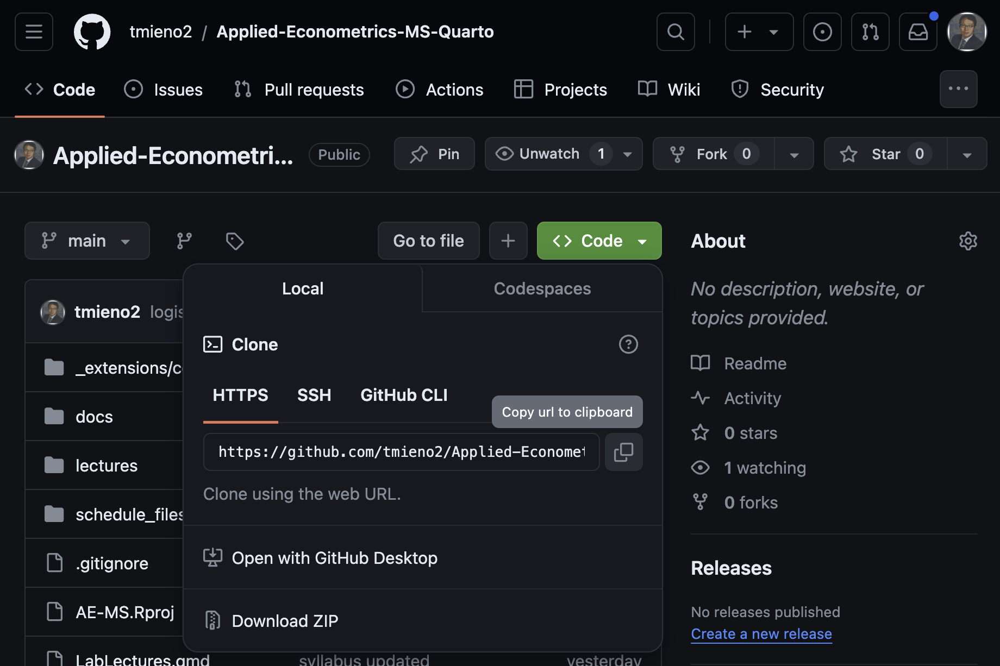
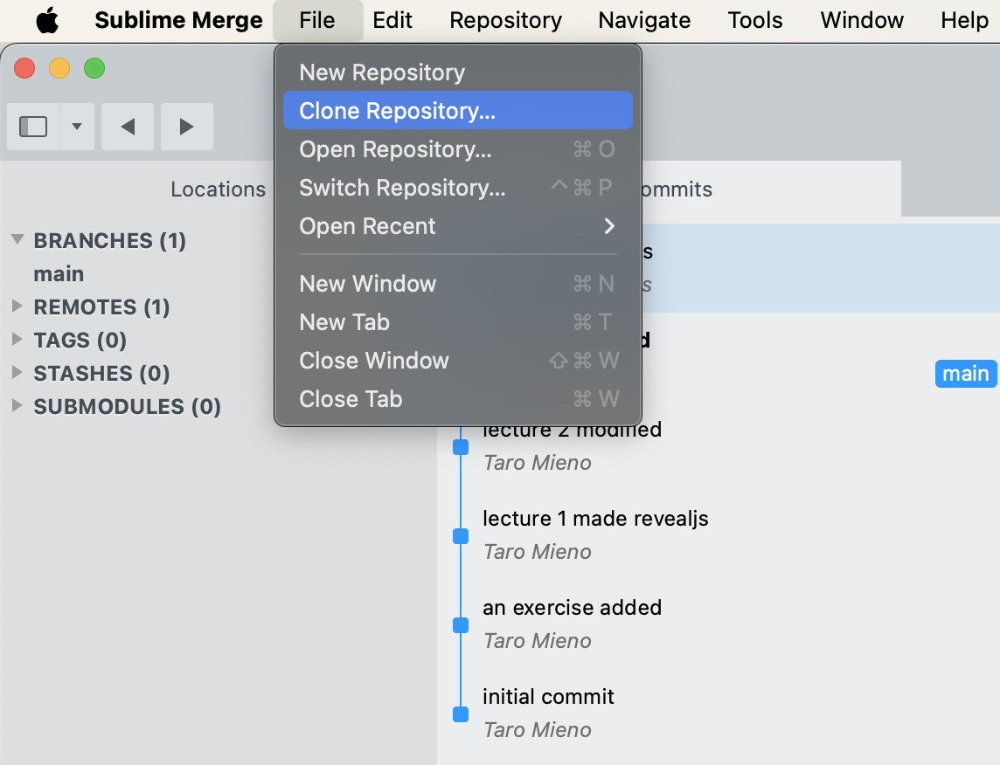
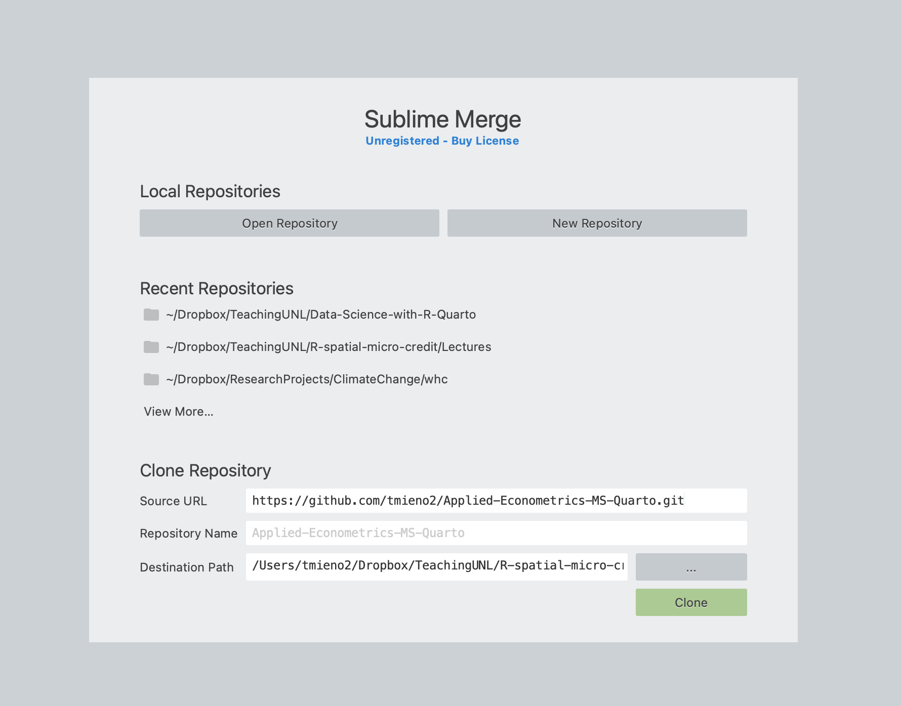

Let’s start with what Github actually is, because the name gets used pretty loosely. Think of it as an online service for storing code, primarily programs, though small datasets are fine too. The unit of storage is a repository, which you can picture as a folder that happens to live online. Repositories are either public, meaning anybody can look at them, or private, meaning only the owner can even see that they exist. Public repositories are useful for learning because you can inspect how someone else organized a working project and start from a good example instead of an empty folder. That is why learning to copy one is our objective here. And here is the part that matters for us: any public repository can be cloned, which is just a longer word for copied, onto your own computer. One reassurance, in the callout: Github runs on a tool called git, and git is well worth learning one day, but this course never asks you to use it. Git tracks the history of a project, but you do not need that version-control workflow for this one-way copy. We copy things down, and that is the whole of it.
Objective
Learn how to clone Github repositories.
You do not need to learn git
Github is built on a tool called git, which tracks the history of a project. Git is well worth learning, but this course never asks you to use it. We use Github in one direction only: copying existing repositories onto your computer.
To do the cloning we are going to use a program called Sublime Merge. I want to be clear that it is not the only option; there are plenty of git clients and you are welcome to use whatever you already know. I picked this one because it is light and the cloning workflow is about three clicks. Install it from the link in the first callout. The second callout is the one I really want you to read: Sublime Merge may be evaluated free with no enforced time limit, but continued use requires a license. Every so often a window may pop up asking you to buy one. That window does not mean an enforced evaluation period has expired, but you should purchase a license if you continue using the software.
In cloning Github repositories, we will use Sublime Merge.
Sublime Merge is certainly not the only option. But, I found it very easy and light-weight to use especially for just cloning Github repositories.
Install Sublime Merge
Click here and install it.
About the license
Sublime Merge may be evaluated free with no enforced time limit, but continued use requires a license. You may occasionally see a window asking you to buy a license during the evaluation. Everything we do in this course works during the evaluation.
The first half of cloning happens on the Github website, not on your machine. You go to the repository you want, and you look for the green Code button, which is on the main page of every repository. Click it and a small panel drops down with the repository’s address in it. Keep the Local tab and the HTTPS option selected, as they are in the screenshot. SSH and Github CLI are other ways to connect, but they require setup that we do not need for a public repository. Download ZIP gives you an archive instead of the URL that Sublime Merge uses for this workflow. Next to that address is a little icon showing two overlapping sheets of paper, and that is the copy button. Click it and the URL is on your clipboard. That is genuinely all this step is: go and get the address. The screenshot below shows exactly what you are looking for, because the button is smaller than you would expect. Once you have copied it, move to the Clone the repository tab and give that address to Sublime Merge.

Now the second half, over in Sublime Merge, and it is three short steps in the tabs below. Step one, open the File menu and choose Clone Repository. Step two, you get a dialog with three boxes: the source URL, which should already be filled in from your clipboard, the repository name, and the destination path, which is where the folder will actually land on your machine. If the Source URL box is empty, paste the URL yourself. Sublime Merge also fills in the Repository Name from that URL. You can leave that name alone, or type a different name if you want the new folder on your computer to have a different name. For Destination Path, click the gray button with three dots and choose the parent folder where you want that new repository folder to be created. This is worth choosing carefully because you will need to return to these files in later lectures. Then click Clone to start copying the repository. Step three is the one I added deliberately, because people skip it. Sublime Merge opens the repository when it finishes, which tells you the copy worked but not where it went. Go to the Destination Path in Finder on a Mac or File Explorer on Windows. You should see a new folder with the Repository Name you just accepted or entered. Open it and confirm that the files you saw on Github are inside, so you know both that cloning succeeded and where to find the copy again. If you cannot find the folder, the callout gives you a shortcut: while the repository is open in Sublime Merge, open the command palette and select Open Containing Folder. Sublime Merge can take you directly there because it already knows the local path. Click through the tabs and I will show you each screen. After you have checked the result, the Do it yourself tab gives you the course repository to clone with this same workflow.
Go to Sublime Merge and follow file -> Clone Repository

You should now see something like below.

Source URL box (if not, just paste the url yourself).Repository Name, the name of the repository for which you copied the url is printed automatically. If you would like a different name, type the name you want.Destination Path, click on the gray box with ... to select the folder on your machine in which the repository is going to be cloned.Clone buttonSublime Merge opens the cloned repository once it finishes, which tells you the copy succeeded but not where it went.
Destination Path you chose in Step 2, using Finder on a Mac or File Explorer on WindowsRepository Name boxIf you cannot find the folder
In Sublime Merge, open the command palette and select Open Containing Folder while the repository is open. That takes you straight to it.
Now you do it yourself. We are going to clone a repository I put together holding the templates and sample files this course uses, and the link is on the slide. Here is the important instruction, and it is bold for a reason: do not delete this folder after you clone it. The rest of Chapter 2 works out of it. The sample qmd that lecture 02-1 walks through chunk by chunk lives in there, there is an example style file, templates/custom.scss, of the sort you will write for yourself in 02-2, and the datasets for the later exercises are in there too. So clone it, and write down where you put it, because the very next lecture asks you to open a file from it.
Let’s clone a repository that has many templates and sample qmd files used in this course.
The repository is found here.
Do not delete it after you clone it. The rest of Chapter 2 works out of this folder:
templates/sample_qmd.qmd is the file lecture 02-1 walks through, chunk by chunktemplates/custom.scss is an example style file to look at when you write your own in 02-2data/ holds the datasets used in the later exercises After cloning
Note down where you put this folder. Lecture 02-1 asks you to open templates/sample_qmd.qmd from it.